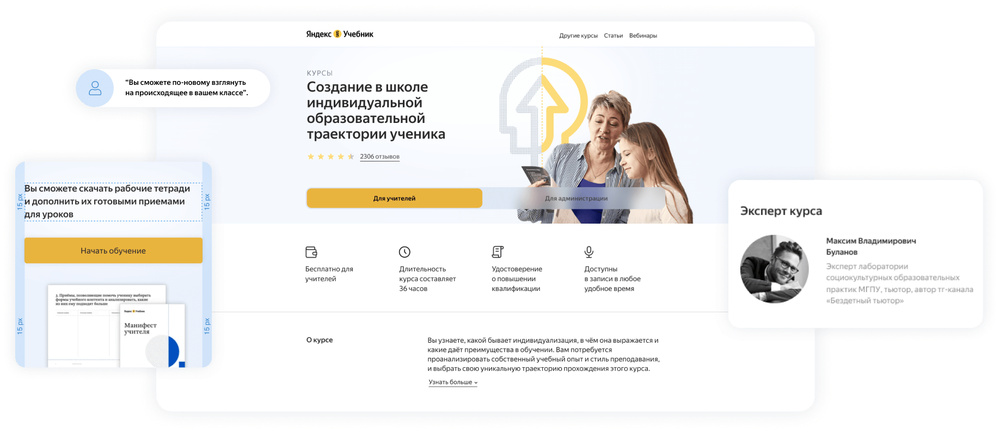
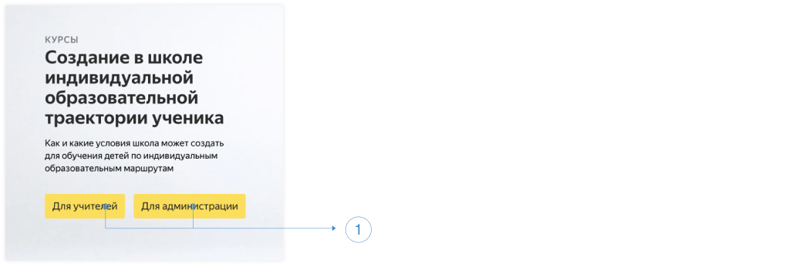
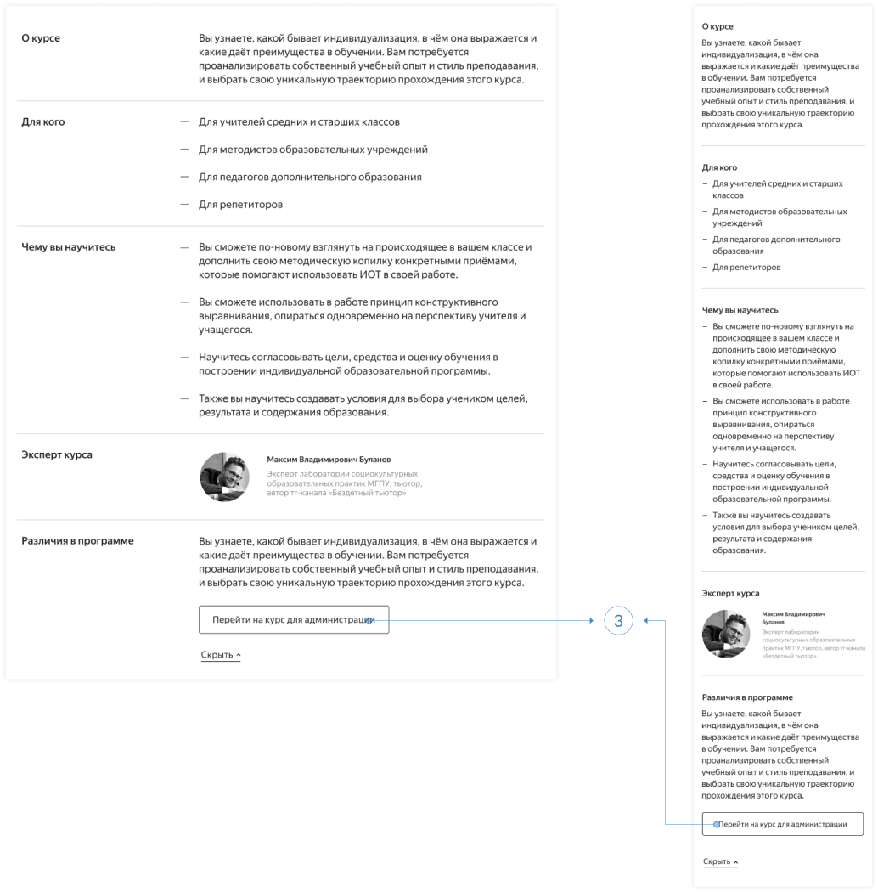
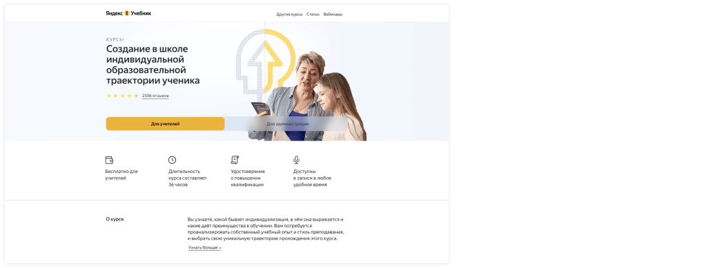
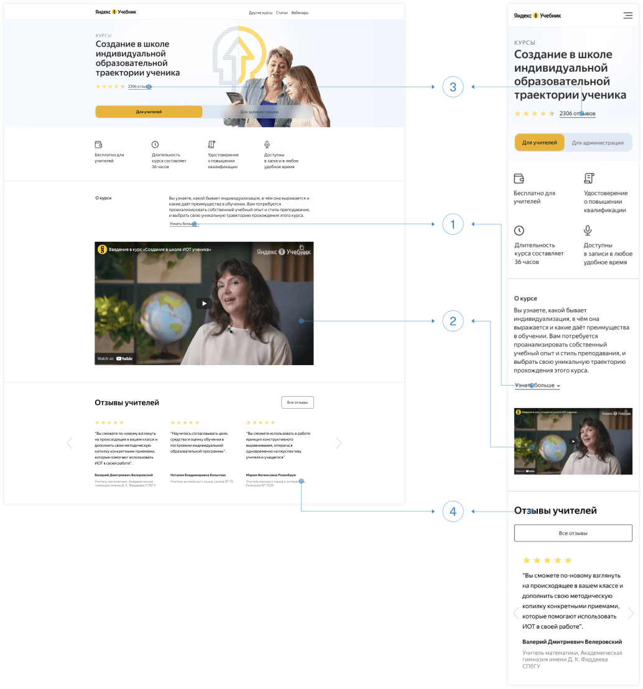
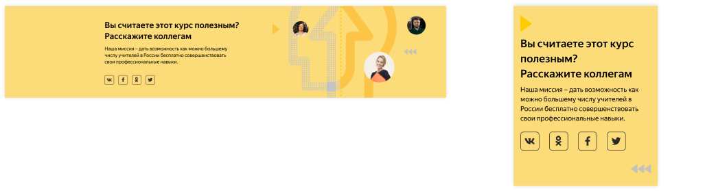
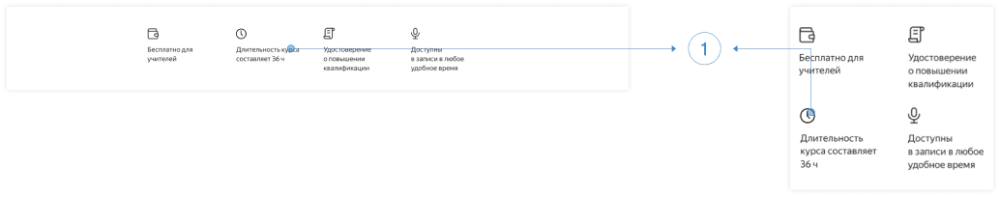
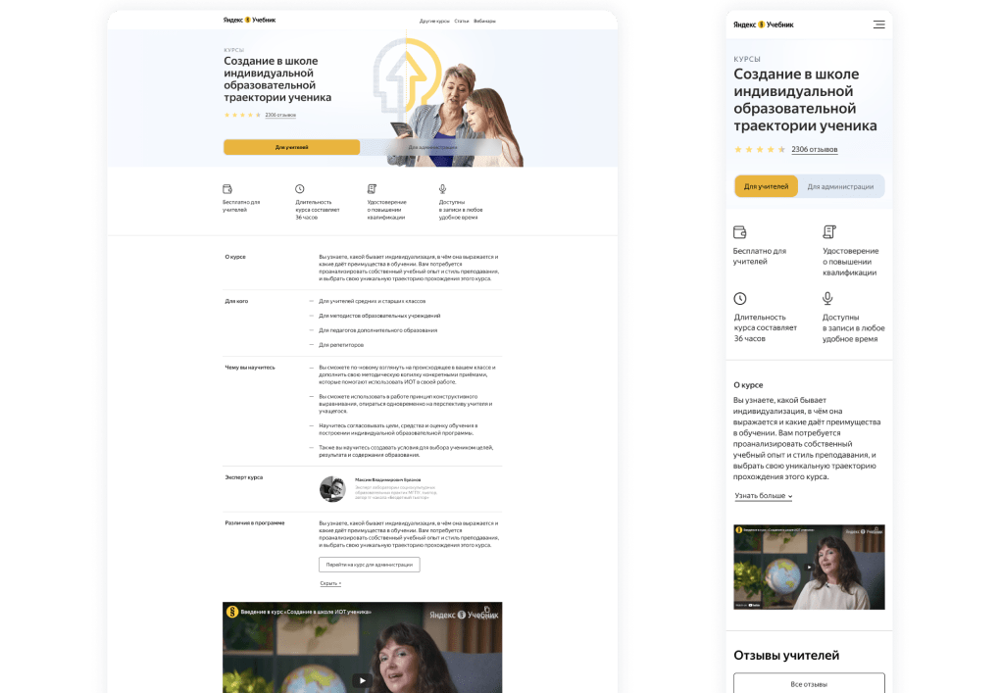
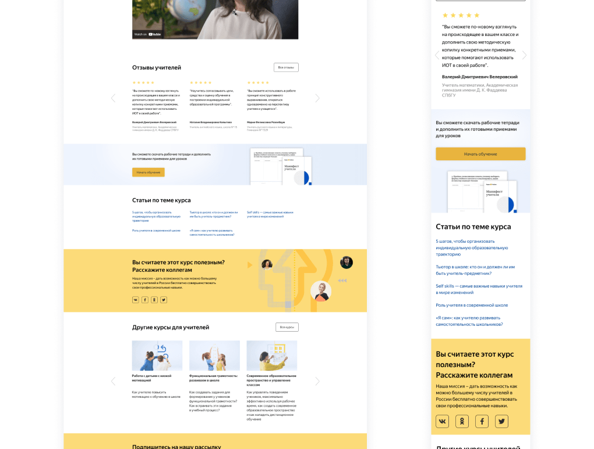
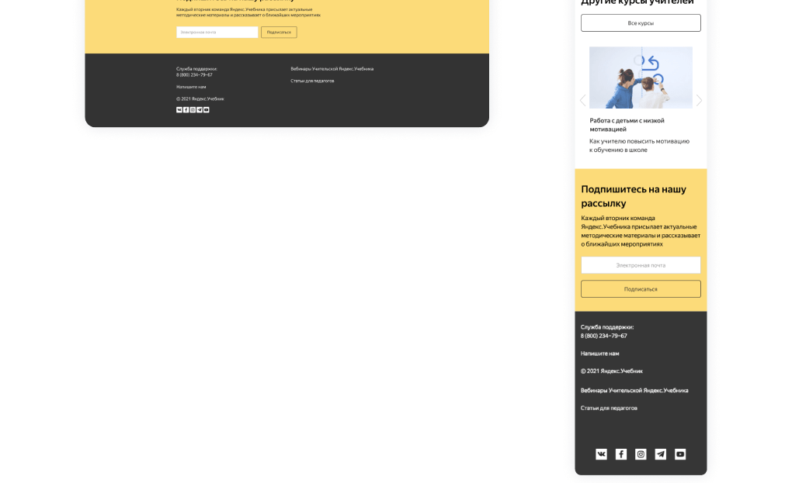

Яндекс.Учебник
Аудит и редизайн лендинга

Описание
Яндекс.Учебник – это образовательная платформа, которая предоставляет школьным учителям эффективные инструменты для преподавания онлайн и профессионального роста. Главная цель этого проекта заключалась в том, чтобы увеличить количество людей, заинтересованных в прохождении курса "Создание в школе индивидуальной образовательной траектории ученика", о котором рассказывается на лендинге.
Мои обязанности
- UX исследование
- Редизайн лендинга
Год
- 2022
Теги
- веб дизайн
- 2022
UX исследование
Во время поиска решения я проанализировала лендинги популярных образовательных платформ для русскоязычной и международной аудитории, а также провела интервью с группой учителей разных возрастных категорий, некоторые из которых испытывают трудности в использовании современных технологий.
Гипотеза 1
Кнопки в начале экрана (1) вводят пользователей в заблуждение (они считают, что, нажав на соответствующую кнопку, перейдут к обучению, а получают описание курса). Особенно это касается мобильной версии сайта, в котором, чтобы просмотреть весь контент курса, нужно долго скроллить:

Я решила заменить кнопки привычным для мобильных пользователей элементом Tab Control (2):
Для пользователей, испытывающих трудности в использовании современных технологий, я добавила кнопку перехода на соответствующий курс (3) в описании курса:

Гипотеза 2
Пользователи не уверены в ценности данного курса, так как:
- он бесплатный;
- ИОТ хорошо звучит в теории, но мало применим в российских реалиях.
Чтобы заинтересовать пользователей, я решила сделать первый экран максимально информативным. Таким образом пользователи сразу смогут понять о чем данный курс:

Я убрала описание курса после заголовка, так как оно не дает пользователям четкого представления о материале курса. Блок «О курсе» (1) раскрывается как аккордеон. Программа курса теперь подается в формате видео (2), поскольку таким образом можно более наглядно и привлекательно описать основные этапы прохождения. Рейтинг (3) и отзывы (4), прошедших данный курс пользователей, показывают реальную пользу данных знаний и что меняется в процессе обучения, если применять их на практике:

Сразу после отзывов идет блок с CTA «Начать обучение», который я несколько поменяла только в мобильной версии (5):
В нынешней desktop версии сайта «Статьи по теме курса» расположены в 4 колонки с очень маленькими межколоночными интервалами, из-за чего все заголовки статей сливаются в один трудно читабельный текст. Сетка из трех колонок решает эту проблему:
На мой взгляд в любом лендинге важно рассказать пользователям о ценностях компании и почему вообще она этим занимается, поэтому в блоке «Поделиться в соц. сетях» я добавила описание миссии Яндекс.Учебника:

Оставшиеся блоки – «Другие курсы» ,«Рассылка» и Footer – остались без изменений (кроме кнопки «Все курсы» в блоке «Другие курсы»). Из-за того, что я значительно сократила длину страницы, вероятность того, что большее количество пользователей просмотрит данные блоки, увеличилась. Те пользователи, у которых остались вопросы по курсу, увидят телефон и почту поддержки. Все это потенциально приведет к увеличению конверсии.
Гипотеза 3
Курсы повышения квалификации всегда занимают много времени, что подразумевает полный пересмотр своего графика.
Так как фактор времени является очень важным в принятии решения проходить курс или нет, вместо иконки «Полезные чек-листы и материалы» я добавила иконку «Длительность курса» на первом экране. Стоимость и длительность (1) стоят первые в списке. В мобильной версии я изменила layout, что на мой взгляд делает подачу информации визуально более привлекательной:

Свободный график прохождения курса и доступ к записям в любое время дублируется в видео-ролике и отзывах.
Прототип Лендинга


